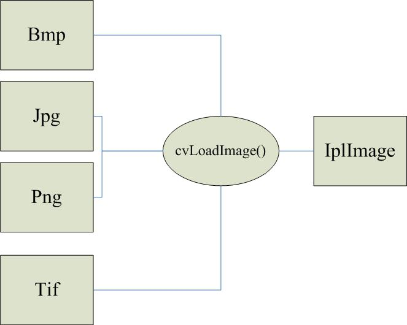
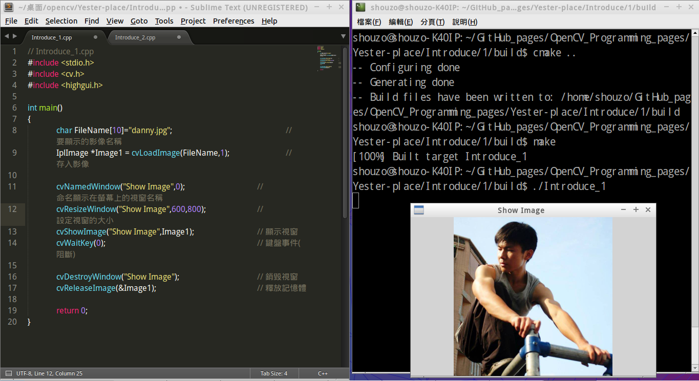

20160419 [學習筆記] OpenCV - 程式設計介紹(1)：讀取圖片檔案
內文整理自 OpenCV程式設計介紹(1)
[ 背景知識 ]
（一）OpenCV - Open Source Computer Vision
- 由Intel開發，Open Source圖形演算法的函式庫(Image Process Libary)。
- 可製作圖片,視訊,矩陣運算,統計,圖論,資料儲存的相關C語言程式設計。
- 常見的應用領域:影像處理、電腦視覺、圖形識別、電腦圖學、資訊檢索或遊戲設計。
- 其他的應用領域(較知名)：物體追蹤、人臉辨識、傅立葉轉換、紋理分析,應用在靜態圖片(BMP,JPG,TIF,PNG),動態Webcam影像處理。
（二）常用的函式庫
1. "cv.h"：電腦視覺函式庫
2. "highgui.h"：GUI 介面函式庫
3. "cxcore.h"
4. "cvaux.h"
[ 函式庫載入方式 ]
#include <cv.h>
#include <highgui.h>
#include <cxcore.h>
#include <cvaux.h>
（三）基本資料結構：IplImage
- 相關資料：http://yester-place.blogspot.tw/2008/07/iplimage1.html
- 藉由 "cvLoadImage()" 所轉換的自定義格式 
[ 範例程式 ] 讀取圖片檔案
// Introduce_1.cpp
#include <stdio.h>
#include <cv.h>
#include <highgui.h>
int main()
{
char FileName[10]="danny.jpg"; // 要顯示的影像名稱(在此為"danny.jpg")
IplImage *Image1 = cvLoadImage(FileName,1); // 存入影像
cvNamedWindow("Show Image",0); // 命名顯示在螢幕上的視窗名稱
cvResizeWindow("Show Image",600,800); // 設定視窗的大小
cvShowImage("Show Image",Image1); // 顯示視窗
cvWaitKey(0); // 鍵盤事件(阻斷)
/* 進行記憶體回收的動作 */
cvDestroyWindow("Show Image"); // 銷毀視窗
cvReleaseImage(&Image1); // 釋放記憶體
return 0;
}
< 執行結果 >  [ 註 ] 圖片檔需和程式碼檔放在同一個目錄下，再編譯執行！